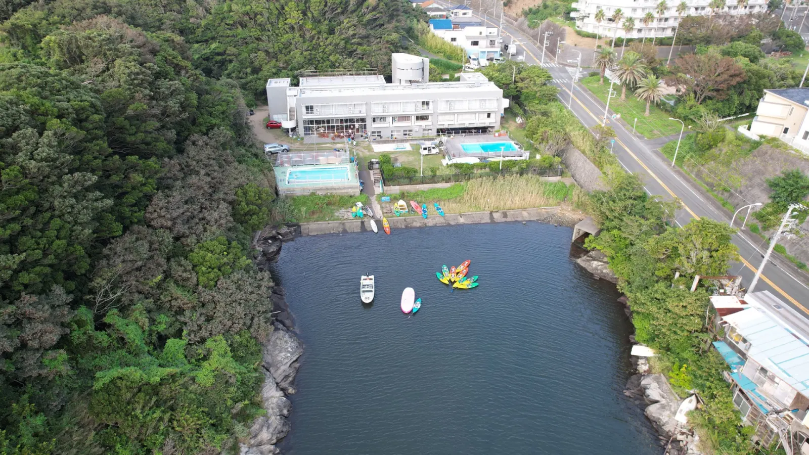
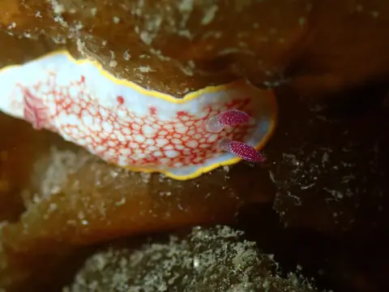
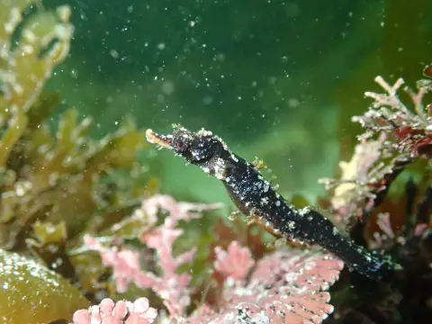
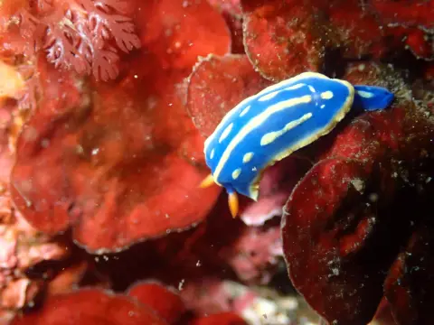
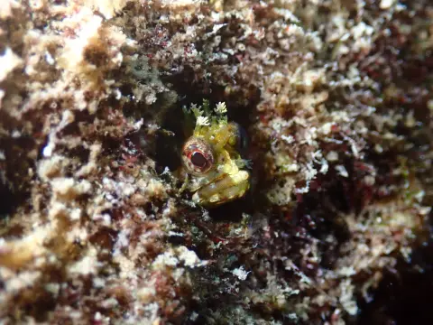
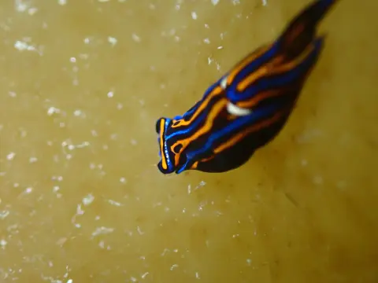
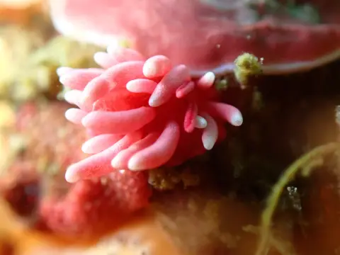
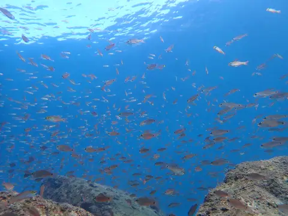
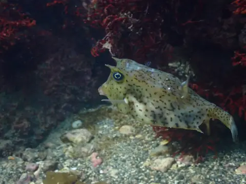

横須賀でダイビングライセンスの取得を考えている方へ。三浦 海の学校は、横須賀市のお隣・三浦市で活動するダイビングスクールです。1997年から講習を中心に活動し、三浦の海を約14年潜ってきたインストラクターが、初心者にも少人数でご案内します。
こんな方にぴったりです
横須賀でダイビングスクールを探しているなら、ぜひ読んでください

ダイビングは初めてで不安…
器材の使い方や水中での呼吸など、基本から一つずつ練習します。泳ぎに自信がない方も、まずはご相談ください。

横須賀周辺で近くのスクールを探している
久里浜から電車11分＋駅から送迎（要予約）。横須賀中央からでも約21分。都心のスクールより圧倒的に近い。

一人で参加するのが心配
受講者の約7割がお一人での参加。少人数制なので、すぐに打ち解けられます。
せっかくならキレイな海で取りたい
三浦の海は透明度が高く、四季を通じて多様な生き物に出会える関東屈指のダイビングエリアです。
横須賀から驚くほど近い
京急線で三崎口駅まで一本。駅からの送迎もご予約時に相談できます。
運賃 ¥230
運賃 ¥320
駐車場あり ¥1,100/日
三崎口駅の改札前で待ち合わせ。
スタッフが車でお迎えに上がります（事前予約制・無料）。
| 集合場所 | 京急三崎口駅 改札前 または 三浦 海の学校に直接 |
|---|---|
| 営業時間 | 9:00〜16:00（不定休） |
横須賀エリアのダイバーに選ばれる理由
横須賀で初心者がダイビングを始めるのに最適な環境がここにあります

経験を、初心者に分かりやすく
水中での呼吸に慣れる速さも、不安に感じることも人それぞれ。様子を見ながら、その方に合った伝え方と進め方を考えます。

三浦の海を約14年
季節や海況によって表情が変わる三浦の海を見てきました。開催場所は、コース内容や当日の海況に合わせてご案内します。

一人ひとりに合わせたやさしいレクチャー
大人数の流れ作業ではなく、あなたのペースに合わせて進行。分からないことがあればすぐに質問できる距離感で、着実にスキルを身につけられます。
このページ限定の特典
「横須賀でダイビング」で検索してこのページを見つけたあなたへ
横須賀のすぐ隣に広がる、三浦の海の世界
黒潮の影響を受ける三浦半島の海は、都心からこんなに近いのに驚くほど豊か。
ウミウシ、タツノオトシゴ、時にはウミガメまで。四季折々の出会いが待っています。








透明度の高い海
黒潮の恩恵で通年キレイな海中
通年ダイビング可能
春夏秋冬それぞれの海を楽しめる
三崎まぐろ
ダイビング後は三崎で新鮮な海鮮を
横須賀から通えるダイビングライセンスの料金
あなたのスケジュールや希望に合わせて選べる2つのプラン
スタンダードプラン
- eラーニング学習教材
- 最短2日間で取得可能
- 少人数制レッスン
- 基本練習＋海洋実習（計4ダイブ）
- 三崎口駅からの送迎（要予約）
- 認定申請料・Cカード発行料
OWD＋AOWセット講習
- OWD＋AOWセット講習
- OWD 53,900円＋AOW 59,800円
- 4〜5日間で2ライセンス取得
- ビーチ7ダイブ＋ボート2ダイブ
- 長くダイビングを続けたい方に
- 三崎口駅からの送迎（要予約）
- 認定申請料・Cカード発行料x2
OWD＋AOWセット講習が、通常セット料金108,700円からさらにお得になります。友人・ご家族・カップルで始めたい方におすすめです。
別途必要な費用
- レンタル器材代: ¥5,500/日
例）スタンダード2日間 → ¥5,500 x 2日 = ¥11,000 - セットプランのレンタル器材代: 4〜5日分が別途必要
- 昼食・お飲み物（各自ご持参ください）
- 駐車場代: ¥1,100/日（お車の方のみ）
※ 自分の器材をお持ちの方はレンタル代不要です
ライセンス取得の流れ
事前のeラーニング＋実技最短2日間で世界に通用するPADIライセンス取得
eラーニング（学科）
PC・タブレット・スマホで自分のペースで学習。通勤電車の中でもOK。
限定水域講習 & 海洋実習 1ダイブ
海洋実習 3ダイブ & 認定
あなたの講師
インストラクターを育てるプロが、直接あなたを指導します
吉田 哲司
インストラクターを養成するプロ。穏やかで分かりやすい指導が特徴。「海を楽しんでほしい」をモットーに、一人ひとりに寄り添った講習を行います。
横須賀から通った受講者の声
横須賀中央に住んでいます。都内のスクールと迷いましたが、電車で20分ちょっとで着くこちらにしました。海がキレイで、都内では味わえない講習環境。選んで大正解でした!
久里浜から電車ですぐ。三崎口駅で送迎してもらえるので車なしの私でも全く問題なし。少人数制でやさしく教えてもらえて、一人参加でも全然平気でした。
夫婦で車で通いました。分からないことをその場で聞けて、自分たちのペースで練習できました。講習後に三崎でまぐろを食べて帰るのも楽しみでした。